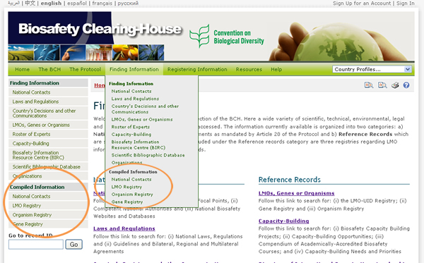

URL: http://bch.cbd.int/database/
Las Listas Compiladas de información son mantenidas y actualizadas regularmente por el CIISB para las siguientes categorías de datos: Contactos nacionales, OVM, Organismos y Genes. A diferencia de la información que se accede a través de las páginas de búsqueda, la información compilada es proporcionada en formatos de lista, y es fácilmente accesible, tanto en pantalla como en archivos PDF.
El acceso a lista compilada de información se encuentra en el menú que se despliega del enlace Búsqueda de Información en la barra de navegación o desde el vínculo correspondiente en el menú ubicado al lado izquierdo de la página Búsqueda de Información.
